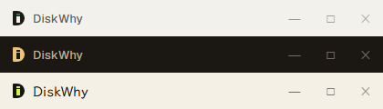

Concept 3 · “Di” 字标
一个粗壮的 D 里面掏出一个 i：i 是“说明”，i 头上那一小片就是容量柱顶上“可放心清理”的那一截。D + i 也正好是 DiskWhy 的头两个字母。
App icon · primary (C sticker) + colourways
icon-theme-A.svg · 浅色主题配色
icon-theme-B.svg · 深色主题配色
icon-theme-ink.svg · 墨底青柠
Size ladder on Windows taskbars — actual pixels (light #f3f3f3 / dark #202020)
256
64
32
24*
16*
256
64
32
24*
16*
* 24 / 16 are hand-tuned on the pixel grid (icon-24.svg, icon-16.svg); 16 drops the hard shadow.
Pixel check — 1x renders enlarged ×5, nearest-neighbour (hand-tuned vs. plain downscale of icon.svg)
24 tuned
24 auto
16 tuned
16 auto
24 tuned
24 auto
16 tuned
16 auto
In a taskbar row (24 px, among neutral placeholders)
Title bar lockups — 16 px mark (A 浅色 / B 深色 / C 卡通), 1x and ×2.3

1x — real size
Horizontal lockup — icon + “DiskWhy” (Geist Bold 700, outlined to paths; the i’s dot becomes the same flat slice)